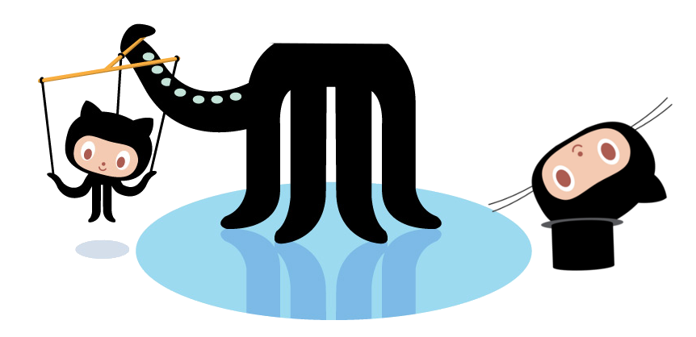
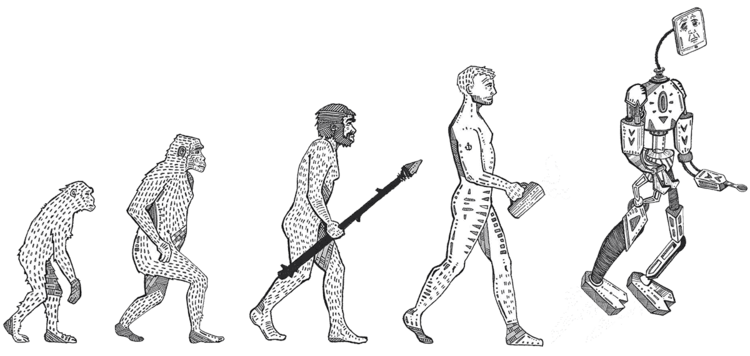

How to become headless puppet master
Kemal Erdem | github.com/burnpiro
End-to-end testing is a methodology used to test whether the flow of an application is performing as designed from start to finish.
https://www.techopedia.com/definition/7035/end-to-end-test
Testing, why bother?
Because of JavaScript?
We're humans
and Perfection is an issue
What color am I?
Selenium
PhantomJS
Headless Chrome

How to install?
yarn add puppeteer
export PUPPETEER_SKIP_CHROMIUM_DOWNLOAD=true
const puppeteer = require('puppeteer');
puppeteer.launch().then(async browser => {
const page = await browser.newPage();
await page.goto('https://www.google.com');
// other actions...
await browser.close();
});
const puppeteer = require('puppeteer');
puppeteer.launch().then(async browser => {
const page = await browser.newPage();
await page.goto('https://www.google.com');
// other actions...
await browser.close();
});
const puppeteer = require('puppeteer');
puppeteer.launch().then(async browser => {
const page = await browser.newPage();
await page.goto('https://www.google.com');
// other actions...
await browser.close();
});
const env = process.env.ENV || 'development'
const testUrl = process.env.TEST_URL || 'https://reactjs.org/'
module.exports = {
testMatch: [
`**/?(*.)(spec|test).js`
],
setupTestFrameworkScriptFile: `${__dirname}/setups/test.setup.js`,
globals: { // available in all tests
browser: null,
page: null,
testUrl,
env
}
}
const puppeteer = require('puppeteer')
const env = process.env.ENV || 'development'
beforeAll(async () => {
jest.setTimeout(2400000)
browser = await puppeteer.launch({
args: [
'--no-sandbox',
'--disable-setuid-sandbox'
]
})
})
afterAll(async () => {
await browser.close()
})
describe('tests suite', async () => {
beforeEach(async () => {
page = await browser.newPage()
await page.setViewport({ width: 1920, height: 1080 })
})
it('tests sth', async () => {
// tests here
})
})
describe('tests suite', async () => {
beforeEach(async () => {
page = await browser.newPage()
await page.setViewport({ width: 1920, height: 1080 })
})
it('tests sth', async () => {
await page.goto('http://example.com');
await page.screenshot({path: 'example.png'});
})
})
const devices = require('puppeteer/DeviceDescriptors');
describe('tests suite', async () => {
beforeEach(async () => {
page = await browser.newPage()
await page.emulate(devices['iPhone 6'])
})
it('tests sth', async () => {
await page.goto('http://example.com')
await page.screenshot({path: 'example.png', fullPage: true})
})
})
describe('tests suite', async () => {
beforeEach(async () => {
page = await browser.newPage()
await page.setViewport({ width: 1920, height: 1080 })
})
it('tests sth', async () => {
await page.goto('http://example.com', {waitUntil: 'networkidle2'});
await page.pdf({
path: 'example.pdf',
format: 'letter'
});
})
})
describe('tests suite', async () => {
beforeEach(async () => {
page = await browser.newPage()
await page.setViewport({ width: 1920, height: 1080 })
})
it('tests sth', async () => {
await page.setRequestInterception(true);
page.on('request', request => {
if (request.resourceType() === 'image')
request.abort();
else
request.continue();
});
})
})
describe('tests suite', async () => {
it('tests sth', async () => {
await page.goto('http://example.com')
// Type into search box.
await page.type('.searchBox input', 'To Be or Not To Be?')
await page.click('.searchBox button')
// Wait for search button
const resultsList = 'li.results'
await page.waitForSelector(resultsList)
const resultsLength = await this.page.$eval(
resultsList,
el => el.children.length
)
expect(resultsLength).toBe(14)
})
})